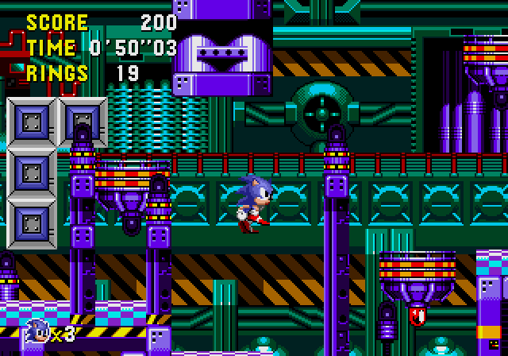

Sonic The Hedgehog CD (1993)
Tudo acontece entre Sonic The Hedgehog 1 e Sonic the Hedgehog 2, em um pequeno mundo chamado "Little Planet", que surge em Never Lake uma vez por ano, nesse lugar, o presente e o futuro são interligados, criando as Time Stones, joias que dão à Sonic o poder de viajar no tempo. Quando Dr. Robotnik fica sabendo da existencia dessas joias, parte imediatamente para Little Planet, instalando sua base e máquinas ao redor do pequeno mundo para coletar as jóias antes de Sonic.
Nesta página, iremos resumir algumas curiosidades sobre as fases e os protótipos que foram descobertos do game.
Fases
Palmtree Panic
- Se você tiver olhos bens atentos, poderá perceber que essa fase é a reimaginação da Green Hill Zone de Sonic the Hedgehog 1.
- Na batalha contra o Dr. Robotnik dessa fase, se o jogador for abaixo da área do chefe usando o debug bug, é possível encontrar três monitores, sendo que dois deles não são possíveis de obter no jogo, entre eles está o famigerado monitor com a letra "S", que dá ao Sonic invencibilidade e super velocidade ao mesmo tempo, e um monitor com um relógio, que congela o tempo e todos os objetos por alguns segundos.
- Nas primeiras versões do game, a fase originalmente se chamava Salad Plain, entretanto, isso foi posteriormente descartado.
Collision Chaos
- Essa é a fase equivalente à Spring Yard Zone de Sonic The Hedgehog 1.
- Em um dos protótipos, Metal Sonic seria capaz de causar dano ao jogador no início do primeiro ato, isso justifica a razão pela qual há um monitor de escudo escondido no começo da fase.
- Existe um bug onde o jogador pode cair num poço sem fundo no final dessa fase, isso acontece devido aos diferentes level designs das linhas temporais e da física da viagem no tempo.
Tidal Tempest
- Essa é a fase equivalente a Labyrinth Zone, a temida e típica fase debaixo d'água.
- Essa é a única fase no jogo onde não é mostrada na sequência de créditos ao zerar o jogo.
- Devido a uma falha na emulação da placa de vídeo, o port de Sonic CD na Sonic Gems Colletion (PlayStation 2 e GameCube) deixou as águas da linha temporal do sempre mais clara em oposição ao verde da versão original.
Quartz Quadrant
- Quartz Quadrant é uma das duas fases fases que não possui uma contraparte de Sonic 1.
- A versão americana da música do futuro bom dessa fase foi remixada para a faixa N´rrgal Colony em Sonic Chronicles The Dark Brotherhood.
- A música da versão japonesa do futuro bom dessa fase foi utilizada em builds iniciais e jogáveis de Sonic X-treme.
Wacky Workbench
- Outra fase que não possui uma contraparte de Sonic 1.
- No Ato 1, existe uma sala secreta que se encontra abaixo da primeira placa de "Passado" para viajar no tempo, e que pode ser acessada por uma rampa. Esse easter egg possui um achievement para o relançamento digital do jogo. No presente e no futuro bom, não é possível entrar nas sala.
- No passado, o jogador pode atravessar uma parede, que o leva para a pequena sala. Assemelha-se a um templo de tijolo de pedra com pilares (em contraste com as partes mecânicas) e a uma estátua de um anjo. Esta estátua recompensará o jogador com uma fonte de Anéis. O jogador pode sair e voltar para coletar mais anéis.
Stardust Speedway
- Essa fase é a contraparte da Star Light Zone, mas também é bem semelhante a Chemical Plant de Sonic 2.
- Essa é uma das fases com as mais diferenças entre as versões de sua música, principalmente as músicas dos futuros ruins, tanto a do Japão como a dos EUA.
Metallic Madness
- Essa fase é a contraparte da Scrap Brain.
- O ato 3 é o único em todo o jogo a ter uma queda mortal
- Se você habilitar o debug mode e estiver usando o "Sonic Pequenininho" e viajar no tempo, você verá a animação mini dele fazendo a viagem no tempo.
Modificações
R2
R2 é o nome de referência a uma fase deletada de Sonic CD, ela foi descoberta através da análise dos arquivos internos do jogo. Ao analisar os arquivos, foi visto que as fases pulam da "R1" diretamente para "R3", a existência dessa fase também foi provada por meio do level select, onde é realmente visto que as fases pulam do nível 1 para o nível 3. Em uma entrevista entrevista realizada com Jim Tretheway, um dos desevolvedores de Sonic CD, foi afirmado que a R2 foi cortada por não atingir os padrões de qualidade.
A fase se passaria entre a Palmtree Panic e Collision Chaos, e teria 3 atos. Provalvelmente, essa fase seria a releitura de Marble Garden Zone de Sonic 1.
Salad Plain?
Palmtree Panic originalmente se chamaria Salad Plain, isso foi descoberto em um dos protótipos do jogo, onde na tela de Time Attack (que curiosamente, tocava a música do presente da Collision Chaos) mostrava este como o nome da primeira fase.
- Não é possível ter um futuro bom nessa build. Entretanto, os arquivos da fase para o futuro bom estão presentes no disco.
- A paleta de cores dessa fase é diferente, apresentando algumas ligeiras mudanças. Os dados da paleta de cores e os dados do ciclo da paleta ainda se encontram no jogo final.
- O presente tem um fundo diferente, sendo a diferença mais notável as montanhas mais curtas e menos geométricas. Este fundo precoce é a base para os fundos das outras linhas do tempo, que se mantiveram inalterados no jogo final.
Special Stage descartado
Existe um oitavo special stage no jogo final, sendo acessado somente com o código (FM07, PCM07, DA07) no sound test, porém, ela existe apenas como um extra.
Segundo um funcionário da SEGA da Europa, a ideia originalmente era de que o jogo tivesse uma oitava Time Stone. Ao coletá-la, os monitores de áneis automaticamente se transfomariam no monitor com a letra "S", que já foi citado acima, que daria poderes de invencibilidade e super velocidade ao mesmo tempo.
Ao vencer esse Special Stage secreto, você verá uma tela oculta da Special Stage com o tema final do jogo tocando.
Viagem do tempo
A tela de carregamento da viagem no tempo em um dos protótipos (mais especificadamente, o protótipo v0.02) era bastante diferente da versão final, com os gráficos e a animação ainda bem simples.
- O efeito sonoro da viagem no tempo era também bastante diferente da versão final, sendo um barulho bem alto e irritante.
- As placas que fazem Sonic viajar no tempo ainda não tinham efeitos sonoros.
- A viagem no tempo parece não funcionar corretamente, pois ao tentar viajar usando os "spinners" da Palmtree Panic fará com que a fase atual seja reiniciada, em vez de permitir que o Sonic viaje no tempo.
Prototype 510
CD Sonic
Protótipo 510, por vezes conhecido como CD Sonic the Hedgehog, é um protótipo antecipado do Sonic CD. A sua data de compilação é 10 de Maio de 1993. O protótipo mostra o jogo quando estava aproximadamente a meio caminho de ser concluído, todas as fases são jogáveis, embora apenas três possam ser acessados sem level select. Há também bastantes diferenças para a versão final, desde o áudio inicial até aos power-ups adicionais.
Tela de título
- Como é facilmente notável, o título do jogo é CD Sonic the Hedgehog, em vez de Sonic the Hedgehog CD.
- Um emblema dourado com o logótipo Sega e a data copyright (1993) está presente, mas foi removido da versão final.
- O nome da cantora da abertura em anime (versão japonesa), Keiko Utoku é creditado logo na tela de título. Utoku é uma cantora japonesa que faz parte do grupo de idols Mi-Ke e é a voz por trás da música tema "You Can Do Anything".
- As nuvens estão rolando da esquerda para a direita, em vez de usar a camada de escala de sprite.
Special Stage
No Protótipo 510 de Sonic CD, o Special Stage é um pouco mais do que uma tech demo. Ele aparece como parte de uma demonstração do jogo, mas não pode ser jogado de nenhuma forma sem hacking. Nesta demo, os ovnis não existem, mas uma mensagem interessante aparece piscando na tela escrito: "The programmer has a nap. Hold out! Programmer!" ou em português: "O programador tirou uma soneca. Aguente firme! Programador!"
- O design do Special Stage é semelhante ao da segunda fase do jogo final. Sonic não é mostrado parado, ele imediatamente começa a andar e rapidamente começa a correr. Ele também não possui uma sombra ainda, e não há um title card ou display de heads-up.
- O óleo no chão, que posteriormente foi removido, é uma das principais características deste layout de protótipo.